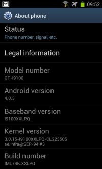

Samsung Galaxy S2
Android 4.0.3 with root acces.
Android 4.0.3 with root acces.
-
Please turn your phone in
landscape mode, so you can read the following instructions.
-
These are the steps to update your Samsung Galaxy S2 to Android 4.0.3
Download the .zip file, put it on your computer and perform the following steps.
Only extract the .zip file!
Step 1: Download the zip file from my premium account on filefactory.com (without adds!!)
Download now!
Step 2: flash: I9100XXLPQ_I9100OXALPQ_I9100XXLPQ_HOME.tar via Odin as PDA
Step 3: flash: CF-Root-SGS2_XX_XEO_LPQ-PROPER-v5.4-CWM5.tar via Odin as PDA
You don't need to worry, in the zip file I uploaded to filefactory.com
is everything included: Odin, CF-Root and a short manual I have made.
This is the official ROM and added only ClockworkMod recovery, busybox and Root acces.
If you want to go to the orginal XDA development thread, tab on the XDA Developers source logo.
| Source: |
-
CF-Root-SGS2_XX_XEO_LPQ-v5.3-CWM5 has problems with mounting secure storage.
Chainfire has updated his Kernel, if you had SD Card problems I have updated the download link!
Download the new .zip file and repeat from step 1.
Screenshots
-

